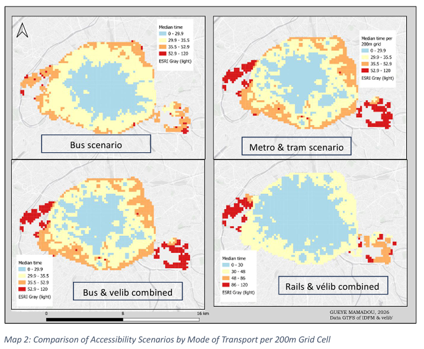
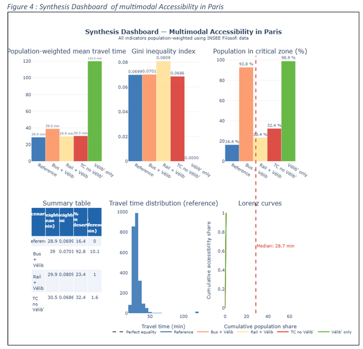
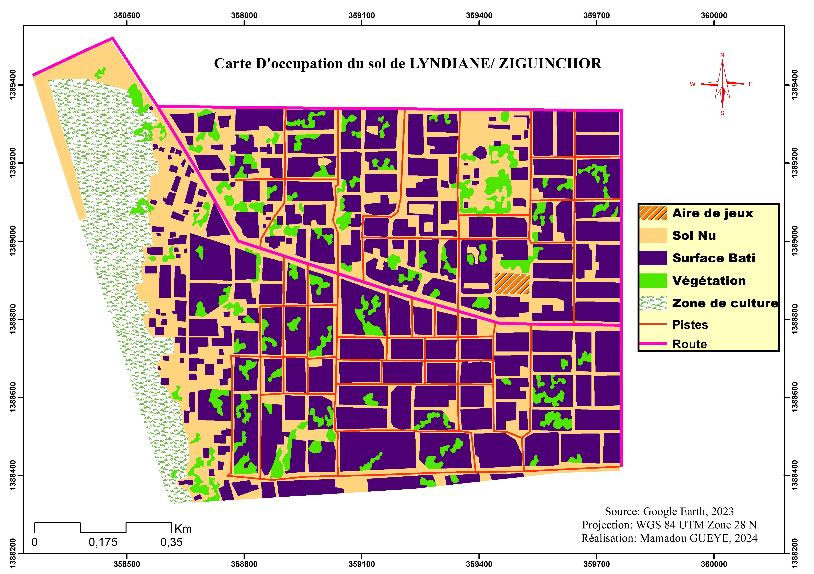
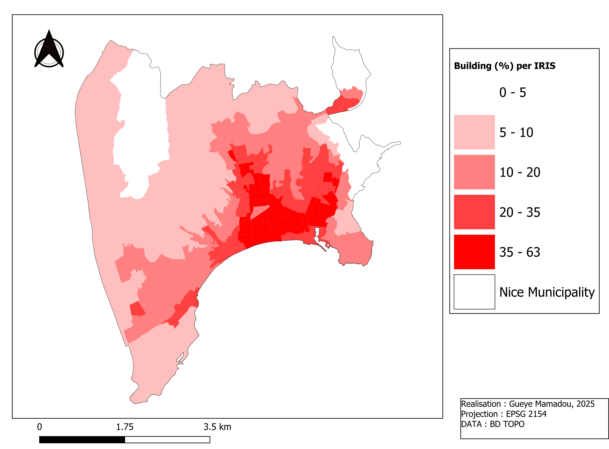
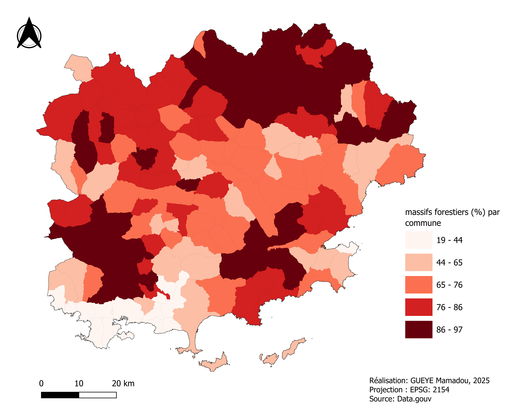
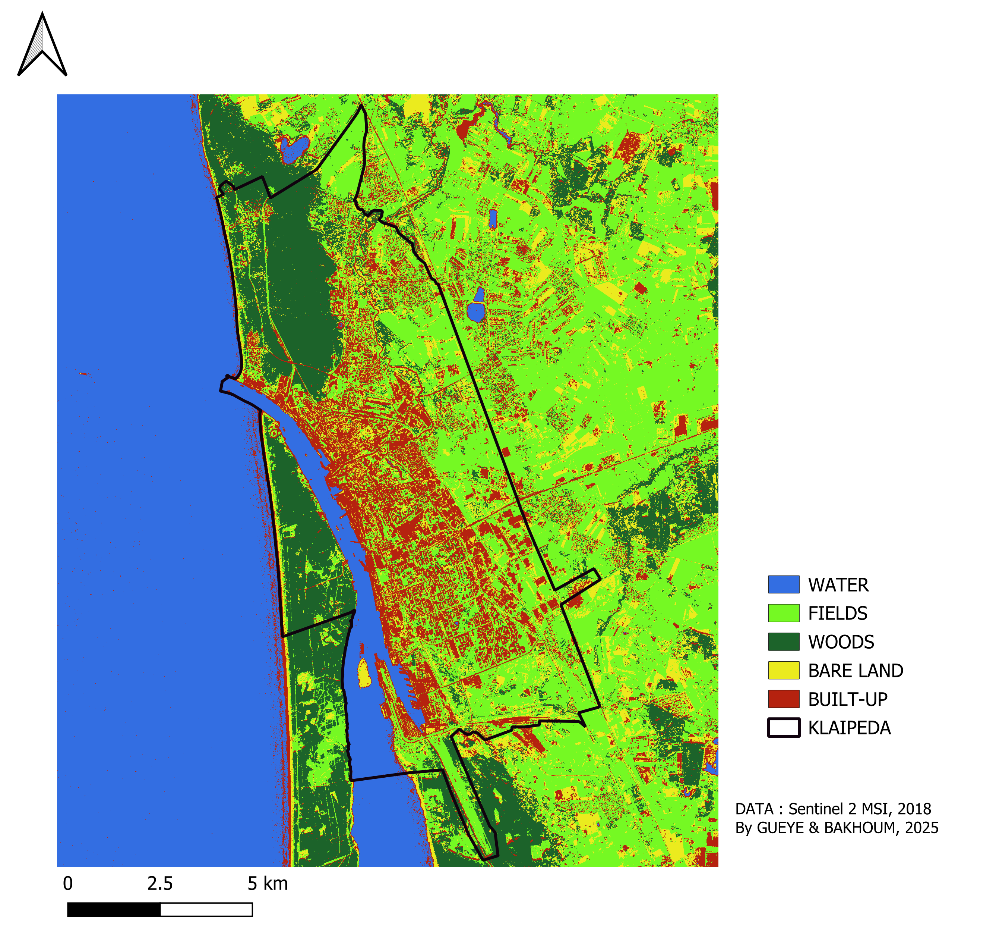
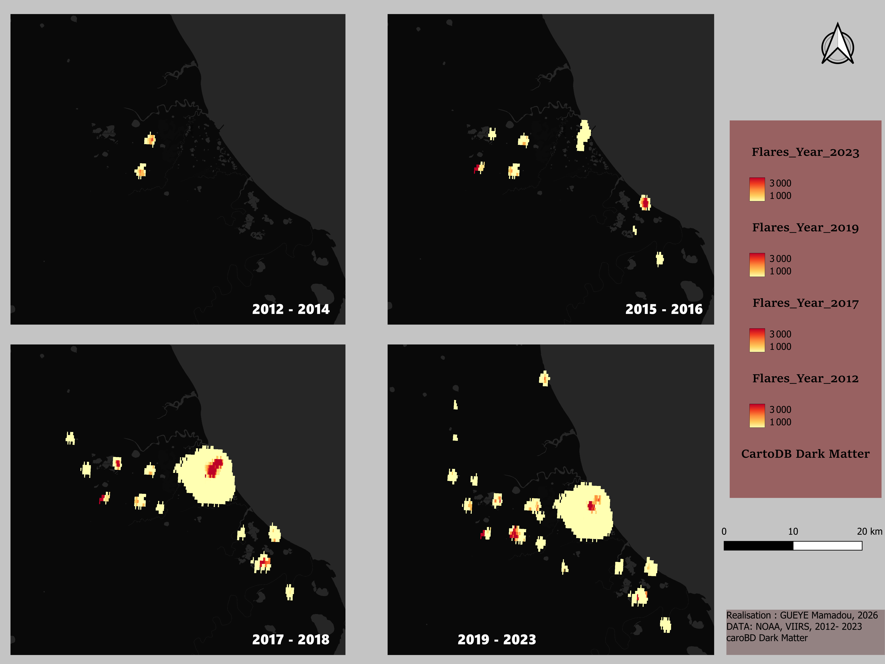
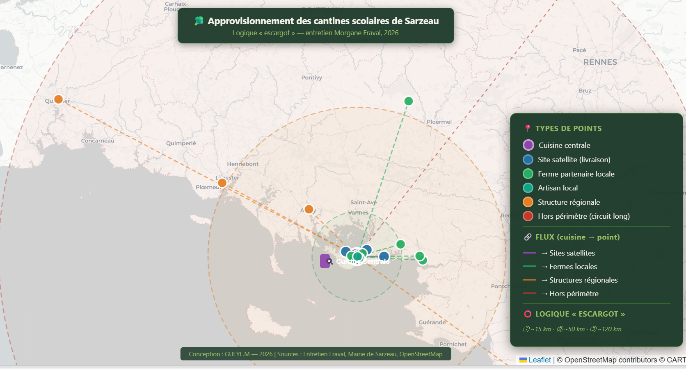

Ma Cartothèque
Défilement interactif de mes productions géospatiales — Rotation automatique toutes les 8 secondes.

Scénarios d'accessibilité par mode de transport
Cartographie comparative des temps médians d'accès à Paris selon quatre configurations d'offre multimodale (Bus seul, Métro/Tram, Bus+Vélib, Rail+Vélib).
Methodology & Data
Interpolation et calcul de matrices de temps sur un carroyage régulier de 200m d'emprise spatiale basé sur les flux GTFS d'Île-de-France Mobilités.
cartes/carte1.png
GTFS IDFM / Grid 200m

Dashboard analytique d'accessibilité aux TC
Tableau de bord statistique de synthèse croisant les indicateurs de performance géospatiale des réseaux de transport avec les disparités économiques territoriales.
Methodology & Data
Génération de courbes de concentration de Lorenz et calcul de coefficients d'inégalités spatiales pondérés par le fichier Filosofi de l'Insee.
cartes/carte2.pngR & Python Spatial / INSEE Filosofi
Occupation du sol du quartier de Lyndiane
Cartographie d'inventaire parcellaire de précision du quartier de Lyndiane à Ziguinchor (Sénégal) différenciant finement le bâti, la végétation dense, le réseau de pistes et les champs.
Methodology & Data
Numérisation vecteur et photo-interprétation d'imagerie haute résolution à l'échelle fine du quartier. Projection calée en WGS 84 / UTM Zone 28N.
cartes/carte3.jpgVectorisation SIG / Google Earth
Plan de masse et aménagement du Campus UASZ
Plan d'inventaire structurel de l'Université Assane Seck de Ziguinchor, cartographiant l'ensemble des pavillons pédagogiques, amphis, hébergements et complexes sportifs.
Methodology & Data
Structuration topologique d'une base de données d'infrastructures à partir de données de télédétection à haute résolution spatiale. Système UTM 28N.
cartes/carte4.jpgSIG Aménagement Établissement
Densité de construction (Building %) par IRIS à Nice
Analyse morphologique spatiale de la commune de Nice évaluant le taux d'emprise au sol des structures bâties rapporté à l'échelle fine du découpage infracommunal IRIS.
Methodology & Data
Requêtage, intersection spatiale et agrégation des polygones issus de la BD TOPO IGN au sein de la maille statistique administrative IRIS.
cartes/carte5.pngIGN BD TOPO / Maillage IRIS Insee
Taux de massifs forestiers (%) par commune
Analyse de la répartition de la couverture arborée communale dans le département du Var (PACA), mettant en valeur les structures environnementales intérieures face à la pression littorale.
Methodology & Data
Discrétisation par seuils géométriques pour optimiser les contrastes spatiaux. Sources : IGN BD Forêt & Limites Administratives communes.
cartes/carte6.pngQGIS / EPSG:2154
Occupation du sol de Klaipėda
Classification supervisée d'occupation du sol (LULC) de la bande littorale de Klaipėda en Lituanie afin d'isoler l'étalement urbain des matrices écosystémiques.
Methodology & Data
Traitement d'imagerie multispectrale Sentinel-2 MSI. Identification de 5 classes clés : Water, Fields, Woods, Bare Land et Built-up.
cartes/carte7.pngSentinel-2 / GUEYE & BAKHOUM
Suivi multi-temporel des émissions de torchères
Visualisation et extraction des dynamiques spatiales d'émissions de gaz à effet de serre issues du torchage industriel nocturne sur plusieurs années de référence.
Methodology & Data
Exploitation de données thermiques nocturnes issues des capteurs radiométriques NOAA / VIIRS intégrées sur un fond sombre cartographique (CartoDB Dark Matter).
cartes/carte8.pngVIIRS Flares Nighttime Data
Circuits courts d'approvisionnement des cantines de Sarzeau (56)
Carte interactive réalisée dans le cadre d'un projet universitaire (UE HGABU30 - M1 Géographie, AMU). Elle représente la localisation des 12 producteurs partenaires de la cuisine centrale, les différents périmètres d'approvisionnement (communal, intercommunal, régional) et met en évidence la logique en « escargot » du dispositif.
Contexte de réalisation
Réalisée avec Leaflet.js et des données issues d'entretiens de terrain (M. Fraval, L. Alletz) et du Registre Parcellaire Graphique (RPG 2023). La carte a servi de support à l'analyse des reconfigurations territoriales liées à la loi EGAlim et au passage en régie directe de la commune de Sarzeau.
cartes/approvisionnement_sarzeau.html🌍 Voir la carte interactive →